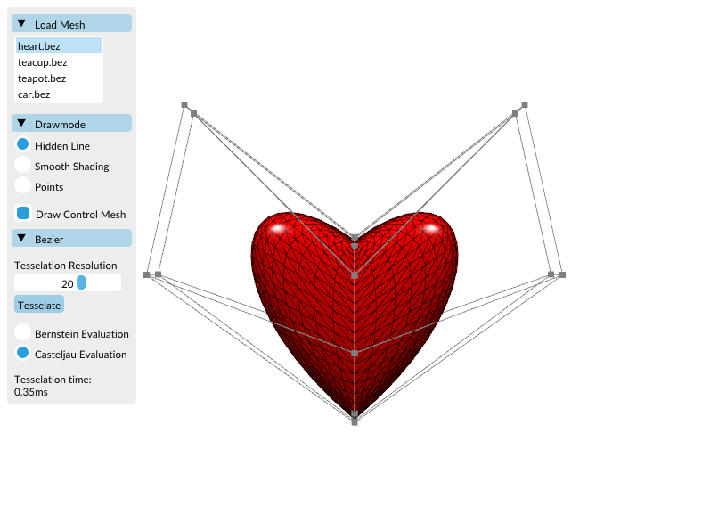
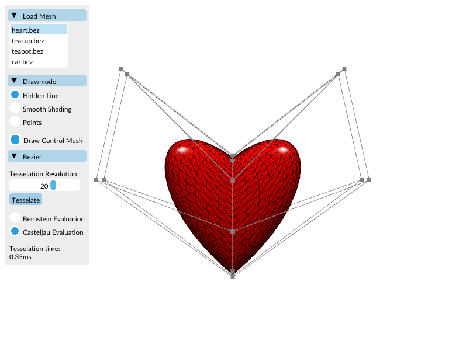

We are using a couple of C++11 features, so please ensure that you use an up-to-date compiler (GCC 4.7 or higher, Visual Studio 2012). CMake is used for setting up build environments.
Building under Linux
Inside the exercise's top-level directory, execute the following commands:
mkdir build cd build cmake .. make
The last command – i.e. make – compiles the application. Rerun it whenever you have added/changed code in order to recompile.
If you run the application and get the error message "window creation failed", try to use the IDE qtcreator for building:
- Open project
- Select the top level
CMakeLists.txt - Choose an empty build folder
- Click
run cmake - Click
finish - Select
Buildand clickBuild all
Building under MacOS
Inside the project's directory, execute the following commands:
mkdir xcode cd xcode cmake -G Xcode .. open BezierSubdiv.xcodeproj
Building under Windows Visual Studio
- Install Visual Studio Community 2013 or later
- You will be asked, if you want to install additional packages. Make sure that you check the c++ development option.
- Inside the exercise's top-level directory create a new
buildfolder (CTRL + SHIFT + N) - Install CMake
- Start the cmake-gui.exe
- Click
Browse Sourceand select the exercise's top-level directory - Click
Browse Buildand select the createdbuildfolder - Click
Configureand select your Visual Studio version - Start Configuring.
- If no major errors occur, click
Generate - Start Visual Studio
- Use
Open Projectto load yourBezierSubdiv.sln - On the right, there should be the solution explorer. Find the project
BezierorSubdivision, right click and chooseSet as StartUp Project - Press CTRL + F5 to compile and run
Running the subdivision
Inside the build directory, execute the following command:
./subdivision
or, if you want to load a specific mesh:
./subdivision ../models/cube.off
or any other .off/.obj model inside of /models.
Running the Bezier Viewer
Inside the build directory, execute the following command:
./bezier
or, if you want to load a specific beziermodel:
./bezier ../models/teacup.bez
or any other .bez model inside of /models.
Dokumentation
A pre-build html dokumentation can be found in doc/index.html and can be opened via any web browser.
Navigation
Use our GUI and the mouse/arrow keys to interact with the viewer.
Suggested order for the exercises
It's up to you, which exercise part (Bezier/Subdivision) you do first. There are 3 different tasks that will be rewarded with the following amount of points (8 in total), if you solve them correctly:
- Bezier - point and normal calculation (3 Points): Compute position and normal of a bezier patch at parameter (u,v) in
Bezier_patch::position_normal(...). Both Bezier and de Casteljau algorithm should be implemented. The result should look like this: - Bezier - tesselation (2 Points): To obtain a triangle mesh from the bezier patches, complete the
tesselate(...)method insrc/bezier_patch.cpp. Use the simpleheart.bezmodel for easier debugging. Adding points and normals will produce this result:Tesselating them correctly: After finishing this task, make sure that one of your evalutation algorithms is much faster than the other.
After finishing this task, make sure that one of your evalutation algorithms is much faster than the other. - Subdivision (3 Points): For getting the subdivision to work, finish the method
subdivide()insrc/subdivision/Mesh.cpp. To do so, implement the generalized version of Catmull-Clark. We use a special mesh format composed of halfedges, which makes it easier to find for example neighboring vertices or all vertices of a face. To get an overview of the most important features, we refer to pmp-tutorial, sections 'Iterators and Circulators' as well as 'Connectivity Queries'. Here some examples of the cube subdivision to compare your results:after adding a vertex per faceafter adding a vertex per edgeafter adding a vertex per vertexresult with some subdivision steps